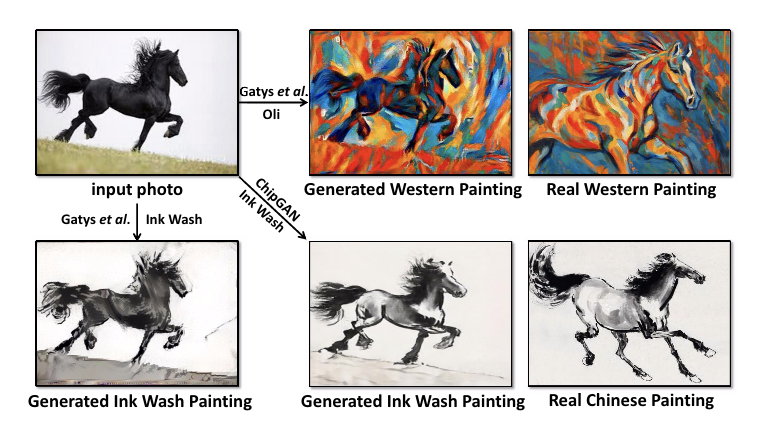
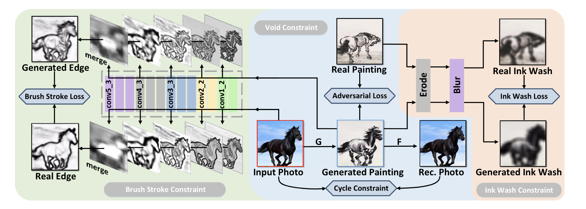
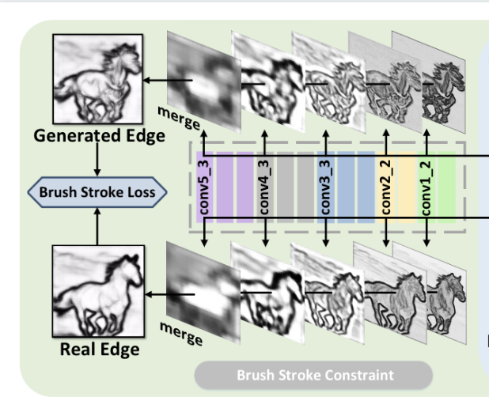
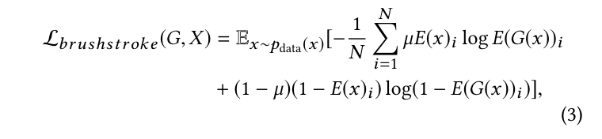

ChipGAN
概要
风格转换已成功应用于照片，生成逼真的西方绘画。然而，由于中西绘画技法的内在差异，直接套用已有的方法，对中国水墨画风格的转换并不能产生令人满意的效果。本文提出了一种基于ChipGAN的端到端（ end-to-end）生成对抗性网络体系结构，用于照片转化为中国水墨画。
ChipGAN的核心模块实施了三个约束
空白（voids）
笔触（ brush strokes）（画笔描边）
水墨色调和扩散（ink wash tone and diffusion）
以解决中国水墨画中普遍采用的三个关键技术。
我们通过咨询专业艺术家，基于新建的中国水墨照片和图像数据集，进行风格化感知研究，以评估生成的绘画与真实绘画的相似性。与最先进的网络和高度程式化的感知研究核心相比，该方法在视觉质量方面的优势表明了该方法的有效性。
介绍

任何成功的艺术家都有自己独特的绘画风格。研究绘画风格中的这种独特性对绘画技能的训练很重要。除了传统的艺术理论培训，计算机视觉和图形技术如风格迁移和非真实感渲染，旨在帮助绘画艺术家系统地理解如何通过观察真实场景或照片，运用适当的绘画技巧呈现独特风格。
将绘画风格迁移到图像可以通过纹理合成来实现，使用低级别的图像特征，忽略图像的语义信息。利用卷积神经网络（CNN）从图像中提取高级语义信息进行风格转换，这显示了视觉逼真的结果（如上图，根据真实西方绘画的风格从照片到生成的西方绘画）。
然而，直接将现有的风格转换技术应用到中国水墨画中会产生不切实际的结果（图中，生成的水墨画，请注意混乱的线条和颜色）。这是因为中国水墨画和西方水墨画有几个本质的区别，在图中的最后一列中，西方真实绘画与水墨画真实绘画之间的比较表明：
- 1）就一幅画的构图而言，西方绘画在整个图像上充满了色彩，而中国水墨画则有一定的空白区域；
- 2） 就表达技巧而言，西方绘画很少使用强线，而它指的是白皮书中的一些区域，中国水墨画家特意留下这些区域来启发观众去想象。会议：2018年10月22日至26日，韩国首尔,中国水墨画采用线条鲜明的笔触来强调轮廓中的物体；
- 3） 在色彩丰富性方面，西方绘画倾向于使用多种颜色，而中国水墨画主要使用不同灰度的墨水，这些墨水会扩散到一张宣纸上（水墨色调和扩散）
为了实现中国水墨画的风格转换，我们提出了一种基于生成对抗网络（GAN）的中国水墨画风格转换解决方案，名为CHIPGAN。根据中国水墨画的三种技法，我们提出了三种特殊的约束：空白、笔触、水墨色调和扩散。
对于空洞，我们的约束结合了对抗损失和周期一致性损失，因为它们的目的是通过将信息转换为不可感知的信号来生成更真实的结果，从而留下白色区域。
对于画笔笔划，我们嵌入了一个预先训练好的整体嵌套边缘检测器（holistically-nested edge detector），并在照片和假画的边缘映射之间加强重新设计的交叉熵损失，以强调有力的线条。
对于水墨扩散和色调，我们使用腐蚀和模糊(eroded and blurred)的图像来模拟这种绘画特性，并提出了水墨鉴别器来区分处理过的真假画
现有的绘画数据集主要包含西方画家的作品（如梵高、莫奈等），没有包含相应中国水墨画的真实照片和图像的可用数据集。为了解决我们的问题，我们提供了一个中国水墨画数据集，其中包括从互联网和艺术工作室收集的真实场景照片和绘画图像，我们的数据集名为“ChipPhi”。
数据集包括
- 1630张马的照片（不同颜色和不同姿势）
- 912张徐悲鸿的绘画图像
- 1976张风景照片（世界著名风景）
- 1542张黄宾虹的绘画图像的景观数据集
总之，本文的贡献有三个方面
- 我们提出了ChipGAN，这是第一个执行从照片到中国水墨画风格转换的3个弱监督的深度网络架构，特别考虑了中国水墨画的三个基本技术：空白、笔触、水墨色调和扩散
- 我们引入了专业艺术家参与的风格化知觉研究，以评估原画和真画之间的风格一致性，并借助深度神经网络分析中国水墨画家的技巧
- 我们建立了第一个包含中国水墨画真实场景和图像的数据集ChipPhi，以便于训练和测试所提出的方法，并有助于中国水墨画风格转移的后续研究
相关工作
图像风格迁移意味着将某个示例图像的样式迁移到目标图像。以前的图像级风格转换可以分为纹理合成和基于approache的卷积神经网络
域级风格传递是指将给定的图像（如照片）与某个域的风格（如某个画家的风格）进行转换。它是通过基于生成性对抗网络（GAN）的方法实现的。
此外，我们还回顾了一些专门为中国水墨画设计的计算方法
纹理合成
有一些非参数算法可以通过对给定的纹理图像重新采样来合成纹理。
Efros和Freeman提出了一种对应映射，根据目标图像的图像强度约束纹理合成过程。
Ashikhmin专注于传输高频纹理，但保留目标图像的比例。
Hertzmanet al.应用图像类比将源图像的样式转换为目标图像。
然而，由于纹理合成主要依赖于面片和低层次的表现，它们无法传递艺术作品的语义风格
CNN based approaches
基于CNN的模型旨在通过预先训练的卷积神经网络提取语义表示。
Gatyset al.[11]首先使用CNN获取图像的表示，并在自然照片上重现著名的喘息风格。
Liet al.[30]发现线性核是极大平方的一个很好的替代品。
Yin[48]和Chen及Hsu[3]研究了内容感知神经风格转移，并改善了结果。
这些方法大多存在速度慢、计算量大的问题，可通过[21,39]中的方法进行加速。Li和Wand[29]训练了一个马尔可夫前馈网络来解决效率问题。
Dumoulinet等人[7]建议同时学习多种风格。虽然这些方法为西方绘画创造了令人印象深刻的形象，但由于中国水墨画的本质不同，它们无法传递中国水墨画的风格
GAN based approaches
从GAN的角度处理风格转换任务时，一些图像到图像的翻译方法是相当有效的。
CoupledGAN[34]通过实施权重共享约束来学习多域图像的关联分布。
然而，这种方法只能以一个noise vector作为输入来生成成对的图像。
因此，它不能直接用作样式转换模型。
Liuet等人[33]将CoupledGAN[34]与变分自动编码器[24]结合起来，提出了一个名为UNIT[33]的框架。
Zhuet al.引入循环一致性损失来减少映射的置换，并提出CycleGAN[50]。
基于CycleGAN[50]的体系结构，DistanceGAN[2]实施了一个约束，即在映射到另一个域时，一个域中两个样本的距离应保持不变。
我们还在模型中选择周期一致性损失来克服模式崩溃[13]，并将其与对抗性损失相结合来模拟空洞。
虽然周期一致性损失使模型保留了原始照片中的一些细节，但它同时也会错误地删除一些重要的笔画，这促使我们为中国水墨画的笔画建模设置额外的约束
Computational methods for Chinese ink wash paintings
中国水墨画可以使用不同的计算方法生成。
Yuet al.将真实绘画的笔触纹理与给定景观图像的颜色信息相结合，合成一幅水墨画。
Xuet al.用事先准备好的工具分解中国水墨画的笔触用于渲染动画的笔刷笔划库。
Yang和Xu通过提供自动笔刷笔划轨迹估计，进一步完善了笔刷笔划分解方法。
Wang基于Kubelka-Munk方程，提出了一种模拟水墨扩散的有效算法。
Yehet al.和Wayet al.基于3D模型的板线笔划和内部着色生成链接水墨画。
Liang和Jin通过对边缘、颜色和纸张纹理的图像处理，从给定的照片生成水墨画。
我们的方法不再像以前那样依赖现有的笔画模拟和低级图像特征，而是探索数据驱动技术来学习真实的中国水墨画特征表示
提议的方法
chipGAN学习从照片领域（例如，由现实世界的马的照片定义）到绘画领域（例如，由中国水墨画的马定义）的映射。
在空白约束中，我们结合循环一致性损失和对抗性损失作为处理空白(voids)技术的约束条件
在笔触约束中，提出了brush strokeloss去除不必要的笔触，同时保留精华；
在水墨约束中添加了扩散效应（diffusion effect）和水墨损失，以确保整个图像的正确色调

1.Void constraint
直观地说，应用空白意味着在画布上的适当位置留下空白。
以马为例，适当地应用空洞需要生成的图像完全忽略天空，并且部分地忽略照片中的草，同时清晰地保持马的轮廓，如图的中间部分所示。
马的照片和一幅中国水墨画具有不同的熵，因为照片与绘画图像相比具有丰富的颜色和纹理。
在图像到图像的翻译任务中，利用源域和目标域之间的这种不同熵，通过组合对抗性损失和循环一致性损失，将源图像的信息有效地转换为几乎不可感知的信号。
因此，我们采用了类似的策略来实施空白约束
Adversarial loss
给出被认为是分别为X和Y的域的未配对的训练集合
我们的模型给出两个映射关系：\(G : X\rightarrow Y \; F:Y \rightarrow X\)
对于$G : XY \(以及他的辨别器\)D_Y$ 的对抗损失是这样定义的

Cycle consistency loss
我们通过将给定的图像X从domain X to target域Y中翻译出来，然后返回到domainX，这将产生相同的图像，从而增加循环一致性约束，公式表达为\(F(G(X))\approx X\) 。由于循环一致性约束要求在两个方向上进行恢复，因此对于每个在Domain Y的图像，还存在一个循环一致性约束$G(F(Y)) Y $

这种约束使得生成的图像保留了源域的一些信息，从而可以将生成的图像转换回源域。
Brush stroke constraint

考虑到正确生成的空白区域，我们的下一个目标是增加笔触，以清晰地描绘中国水墨画风格的物体轮廓例如马的头部和身体应该有强烈的轮廓。
为了以统一的方式对中国水墨画中不同厚度的各种类型的笔划进行建模，我们制定了我们的笔触约束，用于加强真实照片和生成绘画的不同级别的边缘映射之间的一致性。
我们采用整体嵌套的边缘检测器从输入图像中提取五层边缘，以模拟五种不同厚度的笔划。
然后，我们合并从预先训练的VGG-16特征提取程序的不同阶段生成的边缘映射，以获得最终的边缘映射。与将边缘检测任务视为像素级二值分类问题不同，我们从回归的角度训练了一个多级边缘检测器，以获得不同厚度的平滑笔划。
training ground truth中的每个像素都用0到1的实数标记，这表明它们可能是边缘的一部分。
我们获得真实图像的edge map E(x) 以及 生成图像的edge map E(G(x))
然后我们将E(x)作为ground truth 然后计算平衡交叉熵损失以让G生成正确的笔触

- N是照片或假画边缘图中的像素总数
- \(\mu\)是一个平衡权重
- \(\mu\) =N_/N and 1-\(\mu\) = N+/N
- N_ 是边缘图中所有不是边缘点的可能性之和
- N+是边缘图中所有是边缘点的可能性之和
ink wash constraint
正确模拟了空洞和笔触，我们的最终处理是使全局色调（例如，生成的马画的整体色温应接近真实色温）和扩散效果（例如，马的腹部显示链接扩散到宣纸上的不同灰度）在真实绘制和生成绘制g（x）之间保持一致。因此，我们进一步引入了水墨约束。
水墨在宣纸上的扩散是近似各向同性的，所以我们用侵蚀操作和高斯模糊操作来模拟它。
当突出的物体被模糊时，这个操作会抑制纹理和内容信息的显式比较，因此，该模型更倾向于关注tone（风格？）的一致性，如图所示

因此，我们添加了一个对抗性鉴别器\(D_I\)，用于区分\(y_{eb}\)和\(G(x)_eb\)

- y_eb是经过侵蚀和模糊处理的真实绘画
- G(x)_eb是经过侵蚀和模糊处理的生成绘画
- ⊖是侵蚀操作
- B是一个侵蚀核
- 高斯模糊核 \(G_{k,l} = \frac{1}{2\pi\sigma^2}exp(-\frac{k^2+l^2}{2\sigma^2})\)
最后我们定一个水墨画损失:

Full objective
我们的全部目标是上述四种损失的线性组